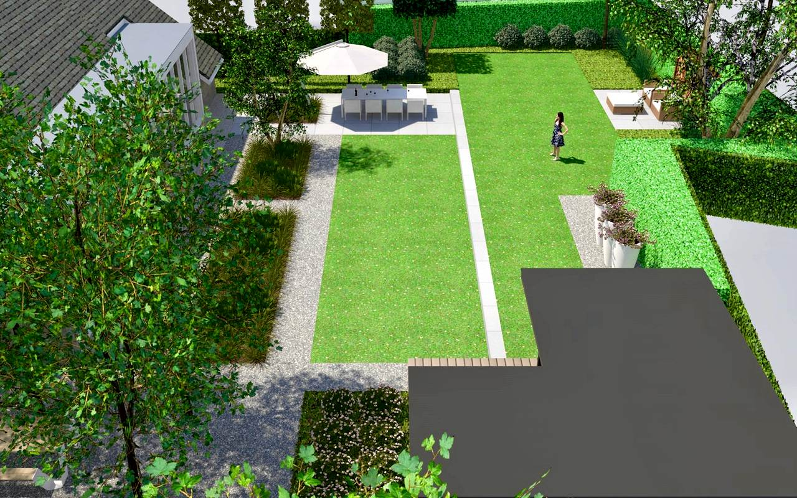

bepaal erfgrenzen
Voordat je begint met het aanleggen van je tuin is het verstandig om na te gaan wat precies de grenzen van je tuin zijn. Zo voorkom je problemen met de buren over bomen die te dicht op de grens staan of schuttingen die de erfgrenzen overschrijden.
